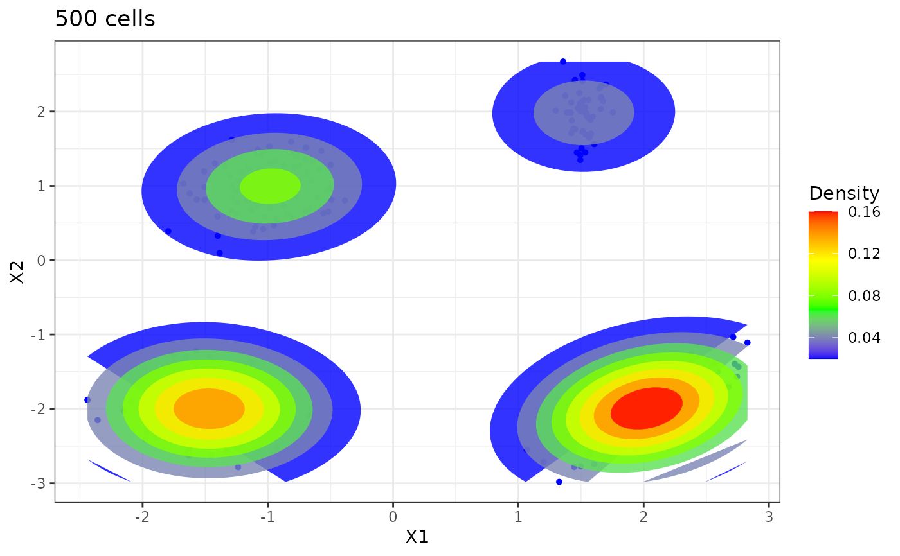

Scatterplot of flow cytometry data
Arguments
- cytomatrix
a
p x ndata matrix, ofncell observations measured overpmarkers.- dims2plot
a vector of length at least 2, indicating of the dimensions to be plotted. Default is
c(1, 2).- gating
an optional vector of length
nindicating a known gating of the cells to be displayed. Default isNULLin which case no gating is displayed.- scale_log
a logical Flag indicating whether the data should be plotted on the log scale. Default is
FALSE.- xlim
a vector of length 2 to specify the x-axis limits. Only used if
dims2plotis of length 2Default is the data range.- ylim
a vector of length 2 to specify the y-axis limits. Only used if
dims2plotis of length 2. Default is the data range.- gg.add
A list of instructions to add to the
ggplot2instruction (seegg-add). Default islist(theme()), which adds nothing. to the plot.
Examples
rm(list=ls())
#Number of data
n <- 500
#n <- 2000
set.seed(1234)
#set.seed(123)
#set.seed(4321)
# Sample data
m <- matrix(nrow=2, ncol=4, c(-1, 1, 1.5, 2, 2, -2, -1.5, -2))
p <- c(0.2, 0.1, 0.4, 0.3) # frequence des clusters
sdev <- array(dim=c(2,2,4))
sdev[, ,1] <- matrix(nrow=2, ncol=2, c(0.3, 0, 0, 0.3))
sdev[, ,2] <- matrix(nrow=2, ncol=2, c(0.1, 0, 0, 0.3))
sdev[, ,3] <- matrix(nrow=2, ncol=2, c(0.3, 0.15, 0.15, 0.3))
sdev[, ,4] <- .3*diag(2)
c <- rep(0,n)
z <- matrix(0, nrow=2, ncol=n)
for(k in 1:n){
c[k] = which(rmultinom(n=1, size=1, prob=p)!=0)
z[,k] <- m[, c[k]] + sdev[, , c[k]]%*%matrix(rnorm(2, mean = 0, sd = 1), nrow=2, ncol=1)
#cat(k, "/", n, " observations simulated\n", sep="")
}
cytoScatter(z)
